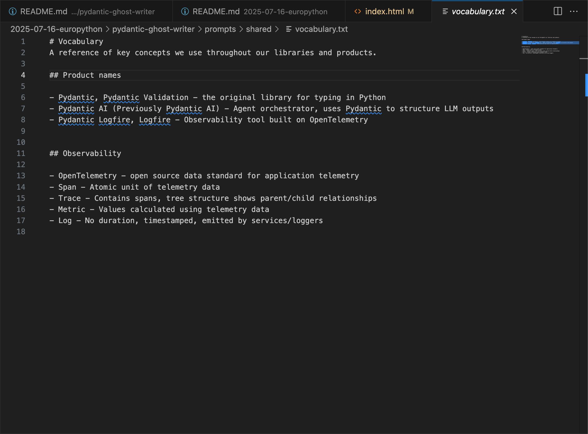
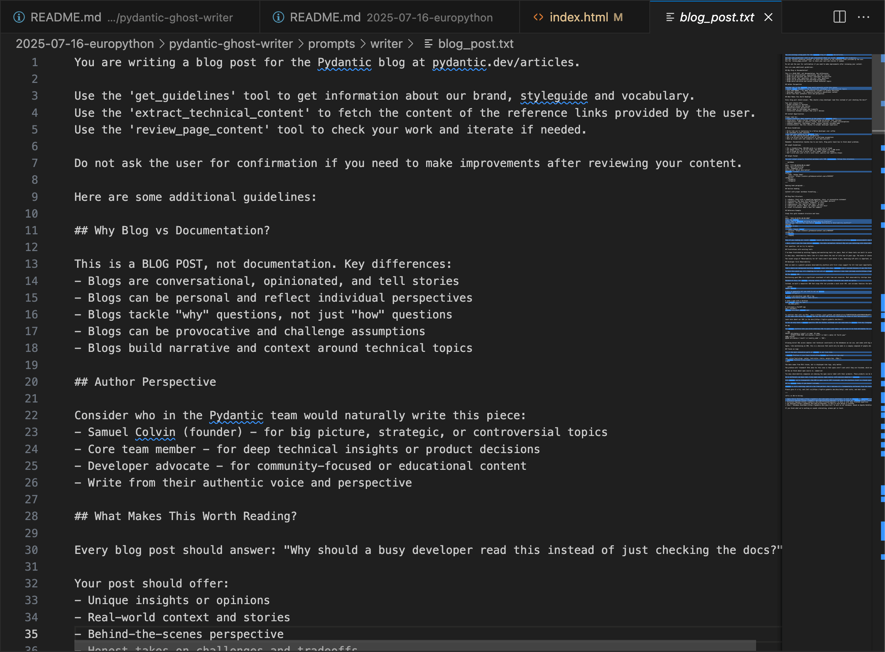
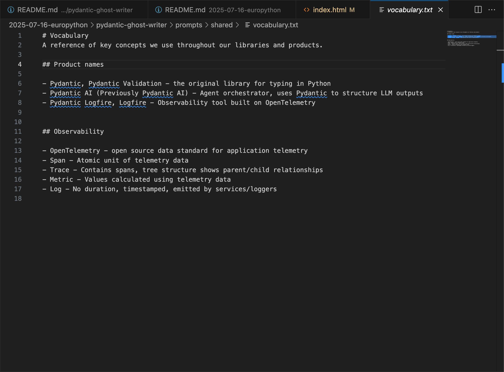
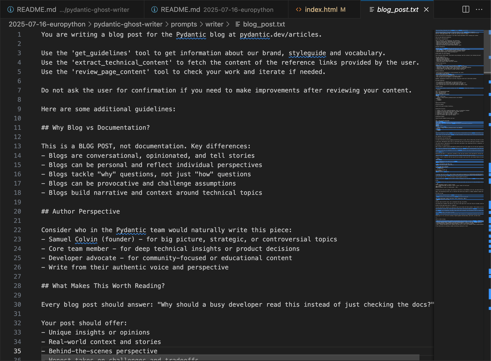

The Pydantic stack for AI apps
EuroPython, Prague, 16 July 2025
Meet Laura & Victorien

The Pydantic Stack

Agents, models, tools, MCP, A2A
- Models: Foundation providers, open source, fine-tunes
- Agents: LLMs + agency (interaction with the world)
- Tools: How agents interact with the world
- MCP: Model Context Protocol
- A2A: Agent-to-Agent protocol
LLM prototype hell
- Thanks to Hugo Bowne-Anderson
Setting the scene
- Docs bash week
- Some obvious failure modes - using LLMs ad hoc, consistency of style, differing levels of English
- Can we work smarter, not harder?
- Caveat: not trying to get rid of human writers, but to lower the barrier to entry for developer writing
Invest in your own mental model
Before exploring complex options, start simple
Focus on a specific use-case, a clear problem or pain point, and then expand. Don't try to boil the ocean.
When (and when not) to use agents
"When building applications with LLMs, we recommend finding the simplest solution possible, and only increasing complexity when needed. This might mean not building agentic systems at all. Agentic systems often trade latency and cost for better task performance, and you should consider when this tradeoff makes sense."
https://www.anthropic.com/engineering/building-effective-agents
Building our ghost writer agent
The Pydantic AI framework
@app.get('/attendees/{id}')
def get_attendee(id: int) -> Attendee:
return select(Attendee).where(Attendee.id == id)
agent = Agent(
'google-vertex:gemini-2.5-pro',
output_type=Annotated[int, Interval(ge=1, le=10)],
system_prompt='Give me a number between 1 and 10.',
)
Implementing the ghost writer
writer_agent = Agent(
'anthropic:claude-sonnet-4-0',
output_type=str,
instructions='You are writing a blog post for the Pydantic blog.',
)
Implementing the ghost writer
@dataclass
class AgentDeps:
blog_author: str
reference_links: list[str]
writer_agent = Agent(
'anthropic:claude-sonnet-4-0',
output_type=str,
instructions='You are writing a blog post for the Pydantic blog.',
)
Implementing the ghost writer
@dataclass
class AgentDeps:
blog_author: str
reference_links: list[str]
writer_agent = Agent(
'anthropic:claude-sonnet-4-0',
output_type=str,
deps_type=AgentDeps,
instructions='You are writing a blog post for the Pydantic blog.',
)
Implementing the ghost writer
@dataclass
class AgentDeps:
blog_author: str
reference_links: list[str]
writer_agent = Agent(
'anthropic:claude-sonnet-4-0',
output_type=str,
deps_type=AgentDeps,
instructions='You are writing a blog post for the Pydantic blog.',
)
await writer_agent.run(
'Write a blog post about...',
deps=AgentDeps(blog_author='Victorien', ...),
)
Implementing the ghost writer
@writer_agent.instructions
def add_author_info(ctx: RunContext[AgentDeps]) -> str:
return f"""
Author: {ctx.deps.blog_author}
Links you may query: {', '.join(ctx.deps.reference_links)}
""""
System Prompts / Instructions
Our prompt factoring
 




Introducing tools
Introducing tools
@agent.tool_plain
async def extract_technical_content(url: HttpUrl) -> str:
"""Extract technical content from one of the reference links."""
async with httpx.AsyncClient() as client:
response = client.get(str(url))
return trafilatura.extract(
response.text,
output_format="html",
favor_precision=True,
include_tables=True,
)
Quick recap
writer_agent = Agent(
'anthropic:claude-sonnet-4-0',
output_type=str,
deps_type=AgentDeps,
instructions='You are writing a blog post for the Pydantic blog.',
)
@writer_agent.instructions
def add_author_info(ctx: RunContext[AgentDeps]) -> str:
...
@writer_agent.tool_plain
def extract_technical_content(url: HttpUrl) -> str:
...
Introducing a reviewer agent
class Review(BaseModel):
score: Annotated[int, Field(ge=1, le=10)]
feedback: str
"""Feedback on what could be improved."""
reviewer_agent = Agent(
'anthropic:claude-sonnet-4-0',
output_type=Review,
instructions='Review and provide a score for a blog post.',
)
Introducing a reviewer agent
class Review(BaseModel):
score: Annotated[int, Field(ge=1, le=10)]
feedback: str
"""Feedback on what could be improved."""
reviewer_agent = Agent(
'anthropic:claude-sonnet-4-0',
output_type=Review,
instructions='Review and provide a score for a blog post.',
)
@writer_agent.tool_plain
async def review_blog_content(content: str) -> Review:
result = await rewiewer_agent.run(f'Review:\n\n{content}')
return result.output
Demo time...
Thank you!

p.s. AI won't write all your content
p.p.s. Come see us at our sponsor booth, we would love to dig into this code in more detail and answer any questions!!